library(tidyverse)
library(tigris)
library(sf)
library(blackmarbler)
library(purrr)
library(terra)
library(tidyterra)
library(lubridate)
library(arrow)
library(here)
library(exactextractr)
library(tmap)
library(mapview)
library(gt)
library(vembedr)
options(tigris_use_cache = TRUE)Detecting a Power Outage from Space
EAGLE-I outage reports + NASA Black Marble nighttime lights, Oahu, January 2025
#embed_url("https://www.youtube.com/watch?v=QiCxG9V0-fw")NASA Earthdata credentials are needed to pull Black Marble data. Store these as environment variables rather than typing them directly into a script.
bearer <- get_nasa_token(username = "reimn17",
password = "C534dpcry/6b/#/")Finding the right night to look at
VIIRS, the satellite behind Black Marble, passes over Hawaii at roughly 1-2 AM local time. Rather than picking whichever night had the worst outages overall, we look specifically at what EAGLE-I reported during that 1-2 AM window, since that’s the moment a Black Marble image for a given date would actually be capturing.
#eagle_i_hawaii <- read_feather(here("data/hawaii_outages_2025.feather")) |>
# filter(county != "Kalawao")
#message("run_start_time timezone: ", attr(eagle_i_hawaii$run_start_time, "tzone"))run_start_time is stored in UTC. Hawaii is UTC-10 with no daylight saving, so the local overpass window has to be found in HST, not by filtering UTC hours directly.
#eagle_i_hawaii <- eagle_i_hawaii |>
# mutate(run_start_time_hst = with_tz(run_start_time, tzone = "Pacific/Honolulu"))
#overpass_window <- eagle_i_hawaii |>
# mutate(
# hour = hour(run_start_time_hst),
# date = as.Date(run_start_time_hst)
# ) |>
# filter(hour %in% c(1, 2))Each date is scored on how large and how widespread the outage was, specifically within that overpass window.
#overpass_summary <- overpass_window |>
# group_by(date) |>
# summarize(
# mean_customers_out = mean(customers_out, na.rm = TRUE),
# max_customers_out = max(customers_out, na.rm = TRUE),
# n_counties_affected = n_distinct(county[customers_out > 0]),
# .groups = "drop"
# ) |>
# mutate(
# score = scales::rescale(max_customers_out) +
# scales::rescale(n_counties_affected)
# ) |>
# arrange(desc(score))
#print(overpass_summary)#storm_date_label <- overpass_summary$date[1]
#message("Selected storm date (by overpass-window severity): ", storm_date_label)
#overpass_window |>
# filter(date == storm_date_label) |>
# summarize(
# mean_customers_out_at_overpass = mean(customers_out, na.rm = TRUE),
# max_customers_out_at_overpass = max(customers_out, na.rm = TRUE),
# n_counties_affected_at_overpass = n_distinct(county[customers_out > 0])
# )The chart below shows the full outage timeline around the selected date, with the actual 1-2 AM overpass window shaded rather than marked with a single instantaneous line, since the exact overpass moment within that window isn’t known precisely.
#overpass_start <- as.POSIXct(paste(storm_date_label, "01:00:00"),
# tz = "Pacific/Honolulu")
#overpass_end <- as.POSIXct(paste(storm_date_label, "02:59:59"),
# tz = "Pacific/Honolulu")
#eagle_i_hawaii |>
# filter(as.Date(run_start_time_hst) %in% (storm_date_label + c(-1, 0))) |>
# ggplot(aes(x = run_start_time_hst, y = customers_out, color = county)) +
# geom_rect(aes(xmin = overpass_start, xmax = overpass_end, ymin = -Inf, ymax = Inf),
# inherit.aes = FALSE, fill = "grey85", alpha = 0.5) +
# geom_line(linewidth = 0.6) +
# labs(title = paste0("Outage Timeline — VIIRS Overpass Window Shaded (", #storm_date_label, ")"),
# subtitle = "Shaded band shows the ~1-2 AM HST window Black Marble would have #actually captured",
# x = NULL, y = "Customers without power (HST)", color = "County") +
# theme_minimal()Setting the baseline and storm dates
The baseline is the 10 days immediately preceding the storm. This window happens to overlap Kilauea’s summit eruption, which entered its fourth eruptive episode on January 15, 2025 and was still actively fountaining as of the January 18 HVO report. That’s kept in the baseline intentionally rather than avoided, since its effect on Hawaii County shows up clearly in the county-level chart further down.
# from 2026-08-03 to 2026-08-13 for baseline - average
# from 2026-08-14 to 2026-08-16 for storm - day by day
# form 2026-08-17 to 2026-08-21 for after - day by day
baseline_dates <- seq.Date(as.Date("2026-08-03"), as.Date("2026-08-13"), by = "day")
storm_dates <- seq.Date(as.Date("2026-08-14"), as.Date("2026-08-17"), by = "day")
recovery_dates <- seq.Date(as.Date("2026-08-18"), as.Date("2026-08-21"), by = "day")
all_dates <- c(baseline_dates, storm_dates, recovery_dates)
period_lookup <- tibble(
date = all_dates,
period = factor(
c(rep("Baseline", length(baseline_dates)),
rep("Storm", length(storm_dates)),
rep("Recovery", length(recovery_dates))),
levels = c("Baseline", "Storm", "Recovery")
)
)
period_colors <- c(Baseline = "grey70", Storm = "firebrick", Recovery = "steelblue")
storm_window_label <- "Hurricane Lala, Aug 14-17, 2026"Hawaii boundary
tigris defaults to NAD83; Black Marble tiles expect WGS84, so a reprojection is required. The boundary is also cropped to the main islands, since Honolulu County’s official boundary technically extends across the Northwestern Hawaiian Islands.
roi_hawaii <- counties(state = "HI", cb = TRUE, year = 2022) |>
st_transform(4326) |>
st_crop(xmin = -160.5, xmax = -154.5, ymin = 18.5, ymax = 22.5) |>
filter(NAMELSAD != "Kalawao County") |>
mutate(county = gsub(" County", "", NAME))Warning: attribute variables are assumed to be spatially constant throughout
all geometriesPulling Black Marble rasters
Each date is pulled individually and wrapped in tryCatch(), so one missing or failed date doesn’t stop the whole batch.
pull_one_date <- function(d) {
tryCatch({
bm_raster(roi_sf = roi_hawaii,
product_id = "VNP46A2",
date = d,
bearer = bearer,
quality_flag_rm = 2)
}, error = function(e) {
message("Failed for ", d, ": ", conditionMessage(e))
NULL
})
}
r_list <- map(all_dates, pull_one_date)Warning in CPL_read_ogr(dsn, layer, query, as.character(options), quiet, : GDAL
Message 1: GDAL was built against curl 8.6.0, but is running against 7.88.1.
Runtime failure is likely !Warning in bm_raster_i(roi_sf = roi_sf, product_id = product_id, date = date_i,
: No satellite imagery exists for 2026-08-03; skippingWarning in open.connection(con, open_mode): cannot open URL
'https://ladsweb.modaps.eosdis.nasa.gov/archive/allData/5200/VNP46A2/2026/216.csv':
HTTP status was '404 Not Found'Failed for 2026-08-04: ℹ In index: 1.
Caused by error in `close.connection()`:
! invalid connectionWarning in open.connection(con, open_mode): cannot open URL
'https://ladsweb.modaps.eosdis.nasa.gov/archive/allData/5200/VNP46A2/2026/217.csv':
HTTP status was '404 Not Found'Failed for 2026-08-05: ℹ In index: 1.
Caused by error in `close.connection()`:
! invalid connectionWarning in bm_raster_i(roi_sf = roi_sf, product_id = product_id, date = date_i,
: No satellite imagery exists for 2026-08-06; skippingProcessing 3 nighttime light tilesProcessing: VNP46A2.A2026219.h01v06.002.2026227103607.h5Processing: VNP46A2.A2026219.h02v06.002.2026227103612.h5Processing: VNP46A2.A2026219.h02v07.002.2026227104208.h5Processing 3 nighttime light tilesProcessing: VNP46A2.A2026220.h01v06.002.2026228105238.h5Processing: VNP46A2.A2026220.h02v06.002.2026228105245.h5Processing: VNP46A2.A2026220.h02v07.002.2026228105312.h5Processing 3 nighttime light tilesProcessing: VNP46A2.A2026221.h01v06.002.2026229101018.h5Processing: VNP46A2.A2026221.h02v06.002.2026229100311.h5Processing: VNP46A2.A2026221.h02v07.002.2026229101555.h5Processing 3 nighttime light tilesProcessing: VNP46A2.A2026222.h01v06.002.2026230103301.h5Processing: VNP46A2.A2026222.h02v06.002.2026230103748.h5Processing: VNP46A2.A2026222.h02v07.002.2026230102536.h5Processing 3 nighttime light tilesProcessing: VNP46A2.A2026223.h01v06.002.2026231110109.h5Processing: VNP46A2.A2026223.h02v06.002.2026231105239.h5Processing: VNP46A2.A2026223.h02v07.002.2026231105339.h5Processing 3 nighttime light tilesProcessing: VNP46A2.A2026224.h01v06.002.2026232105503.h5Processing: VNP46A2.A2026224.h02v06.002.2026232105520.h5Processing: VNP46A2.A2026224.h02v07.002.2026232105932.h5Processing 3 nighttime light tilesProcessing: VNP46A2.A2026225.h01v06.002.2026236124100.h5Processing: VNP46A2.A2026225.h02v06.002.2026236124056.h5Processing: VNP46A2.A2026225.h02v07.002.2026236124109.h5Processing 3 nighttime light tilesProcessing: VNP46A2.A2026226.h01v06.002.2026236150035.h5Processing: VNP46A2.A2026226.h02v06.002.2026236150045.h5Processing: VNP46A2.A2026226.h02v07.002.2026236150625.h5Processing 3 nighttime light tilesProcessing: VNP46A2.A2026227.h01v06.002.2026236164043.h5Processing: VNP46A2.A2026227.h02v06.002.2026236165505.h5Processing: VNP46A2.A2026227.h02v07.002.2026236163023.h5Processing 3 nighttime light tilesProcessing: VNP46A2.A2026228.h01v06.002.2026236174936.h5Processing: VNP46A2.A2026228.h02v06.002.2026236175549.h5Processing: VNP46A2.A2026228.h02v07.002.2026236174509.h5Processing 3 nighttime light tilesProcessing: VNP46A2.A2026229.h01v06.002.2026237104315.h5Processing: VNP46A2.A2026229.h02v06.002.2026237110112.h5Processing: VNP46A2.A2026229.h02v07.002.2026237105203.h5Processing 3 nighttime light tilesProcessing: VNP46A2.A2026230.h01v06.002.2026238101623.h5Processing: VNP46A2.A2026230.h02v06.002.2026238095843.h5Processing: VNP46A2.A2026230.h02v07.002.2026238101617.h5Processing 3 nighttime light tilesProcessing: VNP46A2.A2026231.h01v06.002.2026239102605.h5Processing: VNP46A2.A2026231.h02v06.002.2026239103017.h5Processing: VNP46A2.A2026231.h02v07.002.2026239103510.h5Processing 3 nighttime light tilesProcessing: VNP46A2.A2026232.h01v06.002.2026240092248.h5Processing: VNP46A2.A2026232.h02v06.002.2026240092743.h5Processing: VNP46A2.A2026232.h02v07.002.2026240092249.h5Processing 3 nighttime light tilesProcessing: VNP46A2.A2026233.h01v06.002.2026241100026.h5Processing: VNP46A2.A2026233.h02v06.002.2026241100504.h5Processing: VNP46A2.A2026233.h02v07.002.2026241100019.h5names(r_list) <- as.character(all_dates)
r_list <- compact(r_list)
message("Dates successfully pulled: ", paste(names(r_list), collapse = ", "))Dates successfully pulled: 2026-08-07, 2026-08-08, 2026-08-09, 2026-08-10, 2026-08-11, 2026-08-12, 2026-08-13, 2026-08-14, 2026-08-15, 2026-08-16, 2026-08-17, 2026-08-18, 2026-08-19, 2026-08-20, 2026-08-21message("Dates dropped (no imagery / failed): ",
paste(setdiff(as.character(all_dates), names(r_list)), collapse = ", "))Dates dropped (no imagery / failed): 2026-08-03, 2026-08-04, 2026-08-05, 2026-08-06r_all <- rast(r_list)
names(r_all) <- names(r_list)
# Combine
# Rec
baseline_ok <- intersect(as.character(baseline_dates), names(r_all))
storm_ok <- intersect(as.character(storm_dates), names(r_all))
recovery_ok <- intersect(as.character(recovery_dates), names(r_all))
# Rec
r_baseline <- r_all[[baseline_ok]]
r_storm <- r_all[[storm_ok]]
r_recovery <- r_all[[recovery_ok]]Masking and completeness
Everything from here on stays on the raw radiance scale. Log transforms are applied only when needed for a plot, and always fresh, never on top of an already-logged raster.
# add recovery ver.
r_baseline <- terra::mask(r_baseline, roi_hawaii)
r_storm <- terra::mask(r_storm, roi_hawaii)
r_recovery <- terra::mask(r_recovery, roi_hawaii)
completeness_check <- tibble(
date = c(baseline_ok, storm_ok, recovery_ok), #Rec
period = c(rep("Baseline", length(baseline_ok)), rep("Storm", length(storm_ok)), rep("Recovery", length(recovery_ok))), #Rec
n_valid_pixels = c(
sapply(seq_len(nlyr(r_baseline)), function(i) sum(!is.na(values(r_baseline[[i]])))),
sapply(seq_len(nlyr(r_storm)), function(i) sum(!is.na(values(r_storm[[i]])))),
sapply(seq_len(nlyr(r_recovery)), function(i) sum(!is.na(values(r_recovery[[i]])))) # Rec
)
)
print(completeness_check)# A tibble: 15 × 3
date period n_valid_pixels
<chr> <chr> <int>
1 2026-08-07 Baseline 85207
2 2026-08-08 Baseline 85207
3 2026-08-09 Baseline 85207
4 2026-08-10 Baseline 85207
5 2026-08-11 Baseline 85207
6 2026-08-12 Baseline 85207
7 2026-08-13 Baseline 85207
8 2026-08-14 Storm 85207
9 2026-08-15 Storm 85207
10 2026-08-16 Storm 85207
11 2026-08-17 Storm 85207
12 2026-08-18 Recovery 85207
13 2026-08-19 Recovery 85207
14 2026-08-20 Recovery 85207
15 2026-08-21 Recovery 85207County-level luminance
County-level daily means are computed directly from the rasters already pulled above, rather than requesting the same tiles again through a separate summary function.
extract_from_local <- function(raster_stack, roi_sf) {
map_dfr(seq_len(nlyr(raster_stack)), function(i) {
layer <- raster_stack[[i]]
vals <- exact_extract(layer, roi_sf, fun = "mean")
tibble(
county = roi_sf$county,
date = as.Date(names(raster_stack)[i]),
ntl_mean = vals
)
})
}
ntl_trend <- bind_rows(
extract_from_local(r_baseline, roi_hawaii) |> mutate(period = "Baseline"),
extract_from_local(r_storm, roi_hawaii) |> mutate(period = "Storm"),
extract_from_local(r_recovery, roi_hawaii) |> mutate(period = "Recovery")
) #Rec
|
| | 0%
|
|================== | 25%
|
|=================================== | 50%
|
|==================================================== | 75%
|
|======================================================================| 100%
|
| | 0%
|
|================== | 25%
|
|=================================== | 50%
|
|==================================================== | 75%
|
|======================================================================| 100%
|
| | 0%
|
|================== | 25%
|
|=================================== | 50%
|
|==================================================== | 75%
|
|======================================================================| 100%
|
| | 0%
|
|================== | 25%
|
|=================================== | 50%
|
|==================================================== | 75%
|
|======================================================================| 100%
|
| | 0%
|
|================== | 25%
|
|=================================== | 50%
|
|==================================================== | 75%
|
|======================================================================| 100%
|
| | 0%
|
|================== | 25%
|
|=================================== | 50%
|
|==================================================== | 75%
|
|======================================================================| 100%
|
| | 0%
|
|================== | 25%
|
|=================================== | 50%
|
|==================================================== | 75%
|
|======================================================================| 100%
|
| | 0%
|
|================== | 25%
|
|=================================== | 50%
|
|==================================================== | 75%
|
|======================================================================| 100%
|
| | 0%
|
|================== | 25%
|
|=================================== | 50%
|
|==================================================== | 75%
|
|======================================================================| 100%
|
| | 0%
|
|================== | 25%
|
|=================================== | 50%
|
|==================================================== | 75%
|
|======================================================================| 100%
|
| | 0%
|
|================== | 25%
|
|=================================== | 50%
|
|==================================================== | 75%
|
|======================================================================| 100%
|
| | 0%
|
|================== | 25%
|
|=================================== | 50%
|
|==================================================== | 75%
|
|======================================================================| 100%
|
| | 0%
|
|================== | 25%
|
|=================================== | 50%
|
|==================================================== | 75%
|
|======================================================================| 100%
|
| | 0%
|
|================== | 25%
|
|=================================== | 50%
|
|==================================================== | 75%
|
|======================================================================| 100%
|
| | 0%
|
|================== | 25%
|
|=================================== | 50%
|
|==================================================== | 75%
|
|======================================================================| 100%ntl_trend <- ntl_trend |>
mutate(period = factor(period, levels = c("Baseline", "Storm", "Recovery")))
statewide_trend <- ntl_trend |>
group_by(date, period) |>
summarize(ntl_mean = mean(ntl_mean, na.rm = TRUE), .groups = "drop")
ggplot(statewide_trend, aes(x = date, y = ntl_mean, fill = period)) +
geom_col() +
scale_fill_manual(values = c("Baseline" = "grey70", "Storm" = "firebrick", "Recovery" = "lightgreen")) + #Rec
labs(title = "Statewide Mean Nighttime Radiance by Day",
subtitle = "Baseline (Aug 7-13) vs. Storm (Aug 14-17) vs. Recovery (Aug 18-21), 2026",
x = NULL, y = "Mean radiance", fill = NULL) +
theme_minimal()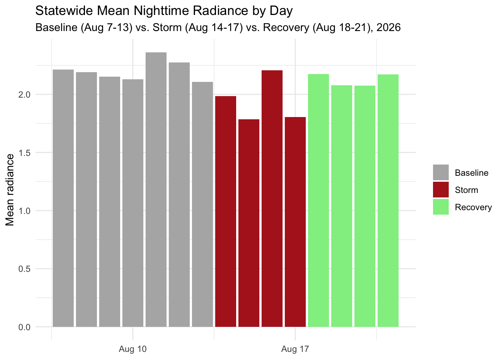
Breaking this out by county shows Hawaii County’s baseline sitting well above what a typical pre-storm night should look like — a real, independent light source (lava fountain glow) unrelated to the electrical grid.
ggplot(ntl_trend, aes(x = date, y = ntl_mean, fill = period)) +
geom_col() +
facet_wrap(~county, scales = "free_y") +
scale_fill_manual(values = c("Baseline" = "grey70", "Storm" = "firebrick", "Recovery" = "lightgreen")) +
scale_x_date(date_breaks = "4 days", date_labels = "%b %d") +
labs(title = "Mean Nighttime Radiance by Day, by County",
subtitle = "Hawaiʻi County took the direct hit; Honolulu County is Oʻahu",
x = NULL, y = "Mean radiance", fill = NULL) +
theme_minimal()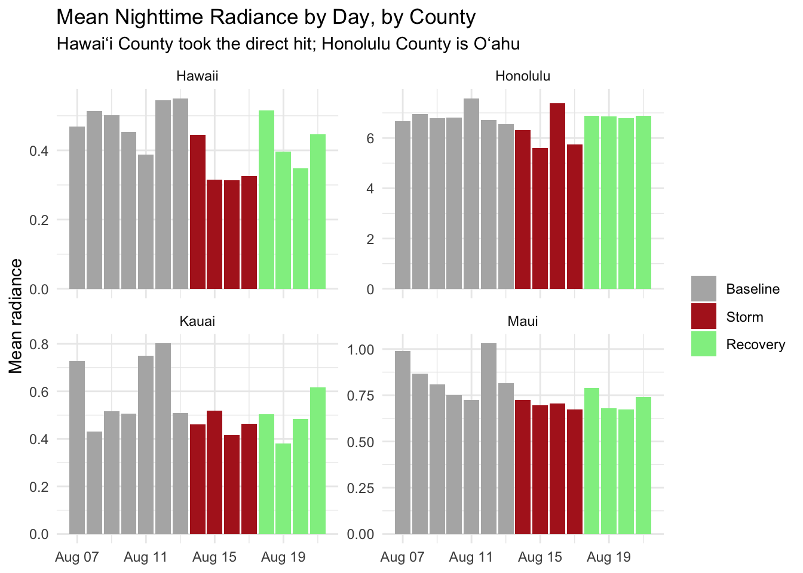
Scoping down to Oahu
EAGLE-I’s overpass-window numbers show Honolulu County with the largest customer impact at the actual satellite capture time. From here on, the pixel-level work is scoped to Oahu — both because that’s where the strongest reported signal is, and because it avoids the Kilauea confound in Hawaii County entirely rather than needing to work around it.
oahu_boundary <- roi_hawaii |> filter(county == "Honolulu")
baseline_mean <- app(r_baseline, mean, na.rm = TRUE) |>
crop(oahu_boundary) |> mask(oahu_boundary)
baseline_sd <- app(r_baseline, sd, na.rm = TRUE) |>
crop(oahu_boundary) |> mask(oahu_boundary)
names(baseline_mean) <- "baseline_mean"
names(baseline_sd) <- "baseline_sd"
storm_stack <- r_storm |> crop(oahu_boundary) |> mask(oahu_boundary)
recovery_stack <- r_recovery |> crop(oahu_boundary) |> mask(oahu_boundary)
# Storm and recovery nights as one stack — this is what the day-by-day
# maps facet over, and what replaces the old single-layer `storm_mean`.
event_stack <- c(storm_stack, recovery_stack)Pixel-level comparison
Every pixel has both a baseline value and a storm-night value. Plotting them against each other directly, pixel by pixel, is a more direct comparison than looking at either distribution separately.
peak_storm <- "2026-08-15" # darkest night — check your completeness table
last_night <- "2026-08-21" # end of recovery window
paired_values <- tibble(
baseline = values(baseline_mean)[, 1],
storm = values(storm_stack[[peak_storm]])[, 1],
recovery = values(recovery_stack[[last_night]])[, 1]
) |>
filter(!is.na(baseline), !is.na(storm), !is.na(recovery))
paired_values |>
pivot_longer(c(storm, recovery), names_to = "phase", values_to = "radiance") |>
mutate(phase = factor(phase, levels = c("storm", "recovery"),
labels = c(paste("Storm:", peak_storm),
paste("Recovered:", last_night)))) |>
ggplot(aes(x = baseline, y = radiance)) +
geom_point(alpha = 0.12, size = 0.5) +
geom_abline(slope = 1, intercept = 0, color = "firebrick", linetype = "dashed") +
facet_wrap(~phase) +
labs(title = "Oʻahu: Per-Pixel Radiance vs. Baseline",
subtitle = paste0(storm_window_label,
" — points below the line are darker than normal"),
x = "Baseline radiance", y = "Night radiance") +
theme_minimal()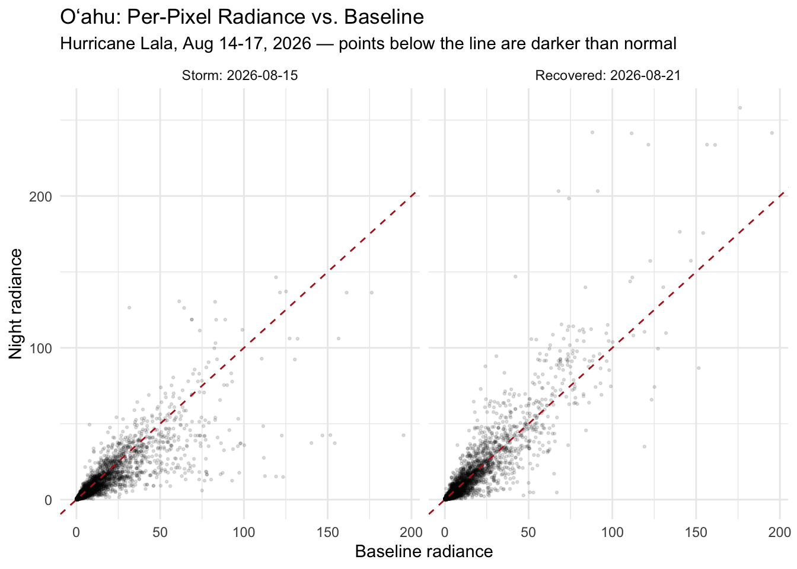
paired_values |>
summarize(
n_total = n(),
pct_darkened_storm = round(mean(storm < baseline) * 100, 1),
pct_darkened_recovery = round(mean(recovery < baseline) * 100, 1)
)# A tibble: 1 × 3
n_total pct_darkened_storm pct_darkened_recovery
<int> <dbl> <dbl>
1 8269 69.3 62.2baseline_vec <- values(baseline_mean)[, 1]
darkened_one <- function(stack, period_label) {
vals <- values(stack) # extract once, not once per layer
map_dfr(seq_len(nlyr(stack)), function(i) {
tibble(baseline = baseline_vec, night = vals[, i]) |>
filter(!is.na(baseline), !is.na(night)) |>
summarize(
date = as.Date(names(stack)[i]),
period = period_label,
n_darkened = sum(night < baseline),
n_total = n(),
pct_darkened = round(mean(night < baseline) * 100, 1)
)
})
}
darkened_by_night <- bind_rows(
darkened_one(storm_stack, "Storm"),
darkened_one(recovery_stack, "Recovery")
) |>
mutate(period = factor(period, levels = c("Storm", "Recovery")))
print(darkened_by_night)# A tibble: 8 × 5
date period n_darkened n_total pct_darkened
<date> <fct> <int> <int> <dbl>
1 2026-08-14 Storm 5847 8269 70.7
2 2026-08-15 Storm 5727 8269 69.3
3 2026-08-16 Storm 5505 8269 66.6
4 2026-08-17 Storm 6103 8269 73.8
5 2026-08-18 Recovery 5195 8269 62.8
6 2026-08-19 Recovery 5609 8269 67.8
7 2026-08-20 Recovery 6229 8269 75.3
8 2026-08-21 Recovery 5140 8269 62.2ggplot(darkened_by_night, aes(x = as.Date(date), y = pct_darkened, fill = period)) +
geom_col() +
scale_fill_manual(values = c("Storm" = "firebrick", "Recovery" = "steelblue")) +
labs(title = "Share of Oahu pixels darker than baseline, by night",
x = NULL, y = "% of pixels darkened", fill = NULL) +
theme_minimal()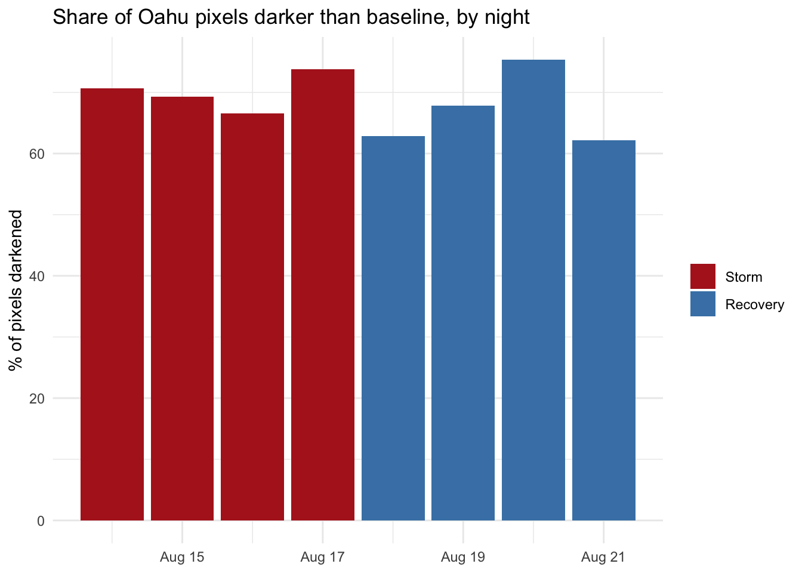
ggplot(darkened_by_night, aes(x = as.Date(date), y = pct_darkened, fill = period)) +
geom_col() +
geom_hline(yintercept = 50, linetype = "dashed", color = "grey30") +
scale_fill_manual(values = c("Storm" = "firebrick", "Recovery" = "steelblue")) +
scale_x_date(date_breaks = "1 day", date_labels = "%b %d") +
labs(title = "Share of Oʻahu pixels darker than baseline, by night",
subtitle = "50% (dashed) is what pure night-to-night noise produces",
x = NULL, y = "% of pixels darkened", fill = NULL) +
theme_minimal() +
theme(axis.text.x = element_text(angle = 45, hjust = 1))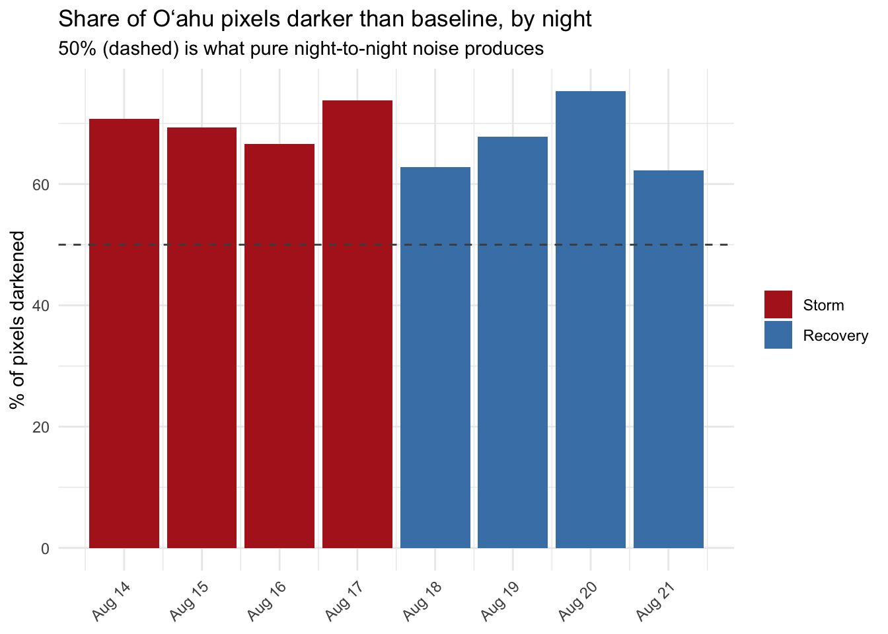
Splitting pixels by how bright they normally are shows the darkening rate climbing steadily with brightness — close to a coin flip among the dimmest pixels, and close to universal among the brightest.
paired_values |>
mutate(brightness_bin = cut(baseline, breaks = c(0, 5, 25, 75, Inf),
labels = c("Very dim", "Dim", "Medium", "Bright"))) |>
group_by(brightness_bin) |>
summarize(n = n(), pct_darkened = round(mean(storm < baseline) * 100, 1))# A tibble: 4 × 3
brightness_bin n pct_darkened
<fct> <int> <dbl>
1 Very dim 5968 70.2
2 Dim 1709 64.1
3 Medium 525 73.7
4 Bright 67 82.1brightness_bin_raster <- classify(
baseline_mean,
rcl = matrix(c(
0, 5, 1,
5, 25, 2,
25, 75, 3,
75, Inf, 4
), ncol = 3, byrow = TRUE)
)
levels(brightness_bin_raster) <- data.frame(
value = 1:4,
label = c("Very dim", "Dim", "Medium", "Bright")
)
ggplot() +
geom_spatraster(data = brightness_bin_raster) +
scale_fill_manual(
values = c("Very dim" = "grey85", "Dim" = "gold", "Medium" = "darkorange", "Bright" = "firebrick"),
na.value = "transparent",
name = "Baseline brightness"
) +
labs(title = "Oahu: Brightness Bins",
subtitle = "Very dim (baseline < 5) treated as noise floor") +
coord_sf() +
theme_minimal()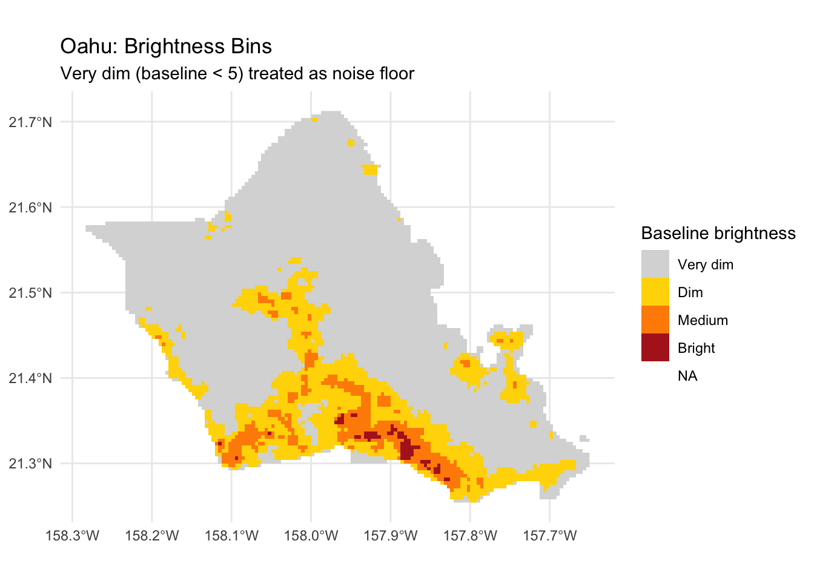
Below a baseline of 5, the darkening rate is close enough to 50% that it’s best treated as noise rather than signal. That threshold is used from here on to exclude pixels with no real light to lose in the first place.
meaningful_mask <- baseline_mean >= 5
baseline_meaningful <- mask(baseline_mean, meaningful_mask, maskvalues = FALSE)
storm_meaningful <- mask(storm_stack, meaningful_mask, maskvalues = FALSE)
recovery_meaningful <- mask(recovery_stack, meaningful_mask, maskvalues = FALSE)#Rec
abs_change_meaningful <- c(storm_meaningful, recovery_meaningful) - baseline_meaningful
names(abs_change_meaningful) <- c(names(storm_stack), names(recovery_stack))
pct_change_meaningful <- abs_change_meaningful / baseline_meaningful * 100
names(pct_change_meaningful) <- names(abs_change_meaningful)Accounting for how much each pixel normally varies
Absolute and percent change both treat every pixel’s baseline as a fixed, single number. In reality some pixels are naturally stable night to night, and others swing quite a bit even without anything unusual happening. A z-score accounts for that by scaling the change against each pixel’s own typical variability.
r_baseline_oahu <- crop(r_baseline, oahu_boundary) |> mask(oahu_boundary)
baseline_sd_oahu <- app(r_baseline_oahu, sd, na.rm = TRUE)
sd_values <- tibble(sd = values(baseline_sd_oahu)[, 1]) |> filter(!is.na(sd))
ggplot(sd_values, aes(x = sd)) +
geom_histogram(bins = 60, fill = "steelblue", color = "white") +
labs(title = "Oahu: Distribution of Per-Pixel Baseline Variability",
x = "Standard deviation (baseline radiance)", y = "Number of pixels") +
theme_minimal()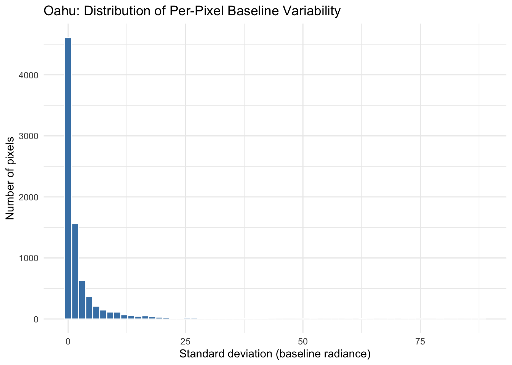
sd_vs_mean <- tibble(
mean = values(baseline_mean)[, 1],
sd = values(baseline_sd_oahu)[, 1]
) |>
filter(!is.na(mean), !is.na(sd))
ggplot(sd_vs_mean, aes(x = mean, y = sd)) +
geom_point(alpha = 0.15, size = 0.5) +
labs(title = "Oahu: Baseline Mean vs. Baseline Variability, Per Pixel",
x = "Mean baseline radiance", y = "SD of baseline radiance") +
theme_minimal()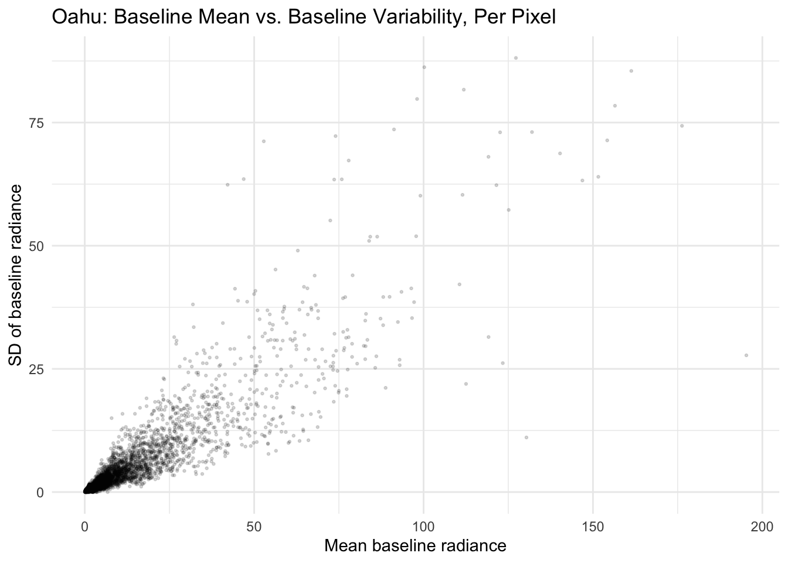
cv_oahu <- baseline_sd_oahu / baseline_mean
cv_values <- tibble(cv = values(cv_oahu)[, 1]) |> filter(!is.na(cv), is.finite(cv))
ggplot(cv_values, aes(x = cv)) +
geom_histogram(bins = 60, fill = "darkorange", color = "white") +
labs(title = "Oahu: Coefficient of Variation, Per Pixel",
x = "CV (SD / mean baseline radiance)", y = "Number of pixels") +
theme_minimal()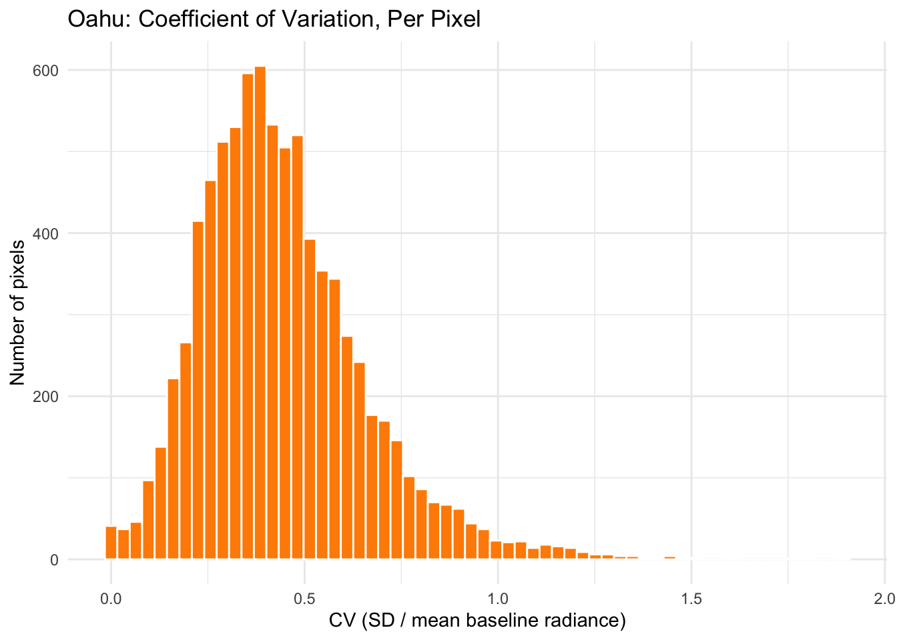
sd_threshold_oahu <- quantile(values(baseline_sd_oahu), 0.1, na.rm = TRUE)
baseline_sd_oahu_masked <- baseline_sd_oahu
baseline_sd_oahu_masked[baseline_sd_oahu_masked < sd_threshold_oahu] <- NA
event_stack <- c(storm_stack, recovery_stack)
event_meaningful <- mask(event_stack, meaningful_mask, maskvalues = FALSE)
names(event_meaningful) <- names(event_stack)
z_score_meaningful <- (event_meaningful - baseline_meaningful) / baseline_sd_oahu_masked
names(z_score_meaningful) <- names(event_stack)
print(minmax(z_score_meaningful)) 2026-08-14 2026-08-15 2026-08-16 2026-08-17 2026-08-18 2026-08-19
min -6.128326 -8.999941 -3.089759 -9.506344 -9.65574 -11.67862
max 14.057408 9.969971 9.969971 7.029299 16.09665 11.83788
2026-08-20 2026-08-21
min -5.201966 -5.328478
max 13.516365 8.133459Comparing the metrics
Absolute change, percent change, and z-score each answer a slightly different question, and each has situations where it’s the wrong tool to reach for.
| Comparing Pixel-Level Change Metrics | |||||
| Nighttime radiance, baseline vs. storm night1 | |||||
| Metric | Formula | Question it answers | Strengths | Weaknesses | Worked example |
|---|---|---|---|---|---|
| Absolute change | storm − baseline | How much raw light was lost at this exact spot? | Simple, intuitive units. No risk of blowing up near zero. Good for spotting the single brightest, most impactful drops (e.g., dense urban cores). | Naturally favors bright pixels — a big drop in a bright area looks the same as a small drop in a dim one, even if the dim one lost nearly all its light. | Baseline 100 → Storm 40: absolute change = −60. Baseline 8 → Storm 3: absolute change = −5. The bright pixel dominates any map or ranking, even though the dim pixel lost a similar share of its light. |
| Percent change | (storm − baseline) / baseline × 100 | What share of this pixel's normal light was lost? | Scales fairly across pixels of different brightness. A quiet neighborhood and a bright one can be compared on the same footing. | Explodes toward extreme, meaningless values when baseline is near zero — a tiny absolute change can register as thousands of percent. Requires masking out very dim / unpopulated pixels first. | Baseline 100 → Storm 40: % change = −60%. Baseline 8 → Storm 3: % change = −62.5%. Now genuinely comparable — both pixels lost roughly the same share of their light. |
| Z-score | (storm − baseline mean) / baseline SD | How unusual is this storm-night value, given how much this specific pixel normally fluctuates? | Accounts for each pixel's own natural volatility. Surfaces real change in quiet, stable areas that a small absolute or percent change might otherwise hide. Best tool for finding locally significant events. | Needs several baseline nights to estimate SD reliably. Breaks down (divides by ~zero) for perfectly flat pixels — needs the same near-zero masking as percent change. A modest z-score doesn't always mean a modest real-world impact if the pixel is naturally very volatile. | Pixel A: baseline mean 8, SD 1. Storm value 3 → z = (3−8)/1 = −5. A large, unusual drop. Pixel B: baseline mean 100, SD 15. Storm value 85 → z = (85−100)/15 ≈ −1. A smaller, fairly ordinary night-to-night swing for that pixel — even though its absolute drop (−15) is three times larger than Pixel A's. |
| Coefficient of variation (CV) | baseline SD / baseline mean | How naturally volatile is this pixel, independent of how bright it is? | Distinguishes real relative instability from brightness alone. Useful diagnostic for deciding how much to trust a z-score at a given pixel. | Not itself a change metric — describes baseline behavior only, says nothing about the storm night. | Pixel with baseline mean 8, SD 1: CV = 0.13 (very stable). Pixel with baseline mean 100, SD 40: CV = 0.40 (much more erratic, relatively speaking). A z-score from the second pixel deserves more skepticism than one from the first. |
| 1 Baseline mean/SD computed across 7 pre-storm nights (Aug 3-6 returned no imagery); each event night compared individually. | |||||
Mapping the change
ggplot() +
geom_spatraster(data = abs_change_meaningful) +
facet_wrap(~lyr, ncol = 4) +
scale_fill_gradient2(
low = "darkred", mid = "white", high = "darkgreen", midpoint = 0,
na.value = "grey90", name = "Absolute\nchange"
) +
labs(title = "Oʻahu: Absolute Radiance Change vs. Baseline",
subtitle = "Red = darker than normal. Aug 14-17 storm, Aug 18-21 recovery. Very dim pixels excluded.") +
coord_sf() +
theme_minimal() +
theme(axis.text = element_blank())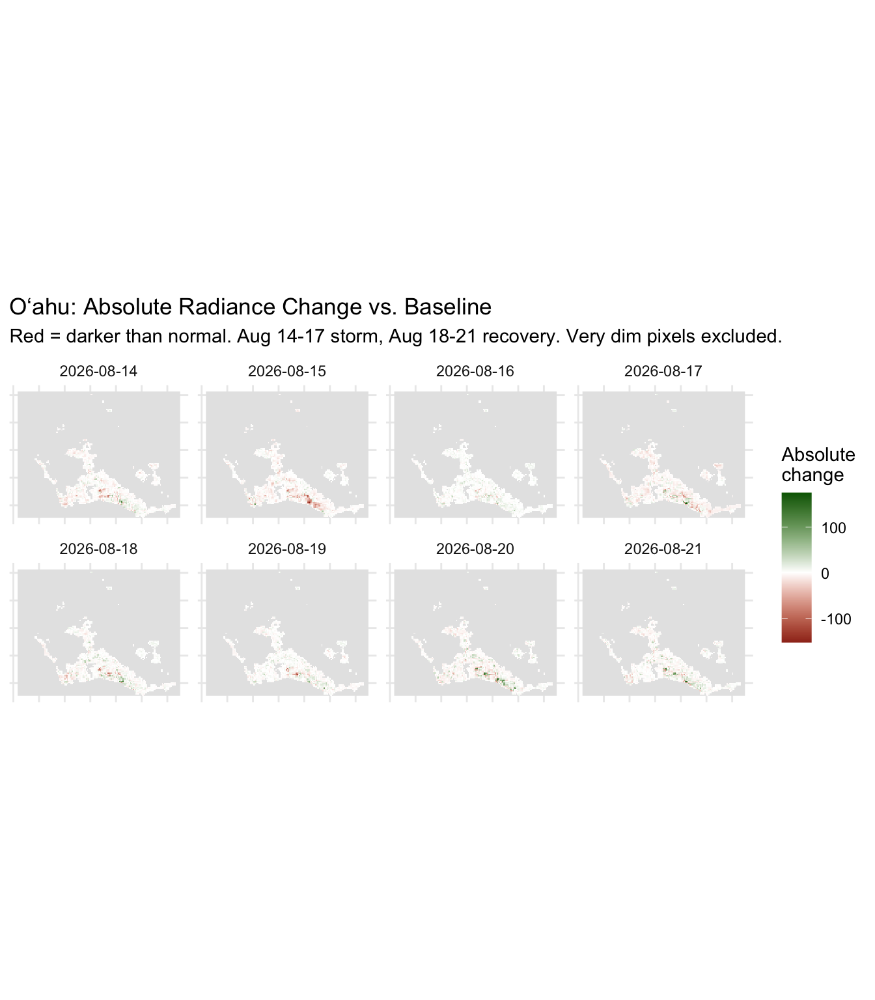
tmap_mode("view")ℹ tmap modes "plot" - "view"
ℹ toggle with `tmap::ttm()`tm_shape(abs_change_meaningful[["2026-08-15"]]) +
tm_raster(
col.scale = tm_scale_continuous(midpoint = 0, values = "rd_yl_gn"),
col.legend = tm_legend(title = "Absolute change, Aug 15")
) +
tm_basemap("CartoDB.DarkMatter")tmap_mode("view")ℹ tmap modes "plot" - "view"tm_shape(z_score_meaningful[["2026-08-15"]]) +
tm_raster(
col.scale = tm_scale_continuous(midpoint = 0, values = "rd_yl_gn"),
col.legend = tm_legend(title = "Z-score, Aug 15")
) +
tm_basemap("CartoDB.DarkMatter")Z-score by community
Aggregating the z-score up to named communities (Census-designated places) makes it possible to compare specific neighborhoods against each other directly, rather than picking individual points by hand.
oahu_places <- places(state = "HI", cb = TRUE, year = 2022) |>
st_transform(4326) |>
st_filter(oahu_boundary, .predicate = st_intersects)place_z <- map_dfr(names(z_score_meaningful), function(d) {
tibble(
NAME = oahu_places$NAME,
date = as.Date(d),
z_score = exact_extract(z_score_meaningful[[d]], oahu_places,
fun = "mean", progress = FALSE)
)
})
oahu_places_z <- oahu_places |>
select(NAME) |>
left_join(place_z, by = "NAME")
ggplot(oahu_places_z) +
geom_sf(aes(fill = z_score), color = "white", linewidth = 0.1) +
facet_wrap(~date, ncol = 4) +
scale_fill_gradient2(
low = "darkred", mid = "white", high = "darkgreen", midpoint = 0,
na.value = "grey85", name = "Mean\nz-score"
) +
labs(title = "Oʻahu: Mean Radiance Z-Score by Community (CDP)",
subtitle = "Aug 14-17 storm, Aug 18-21 recovery") +
theme_minimal() +
theme(axis.text = element_blank())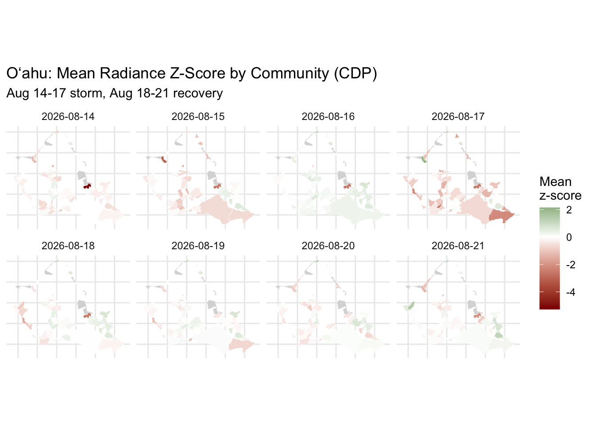
place_z |>
filter(date <= as.Date("2026-08-17")) |>
group_by(NAME) |>
summarize(worst_z = min(z_score, na.rm = TRUE), .groups = "drop") |>
filter(is.finite(worst_z)) |>
arrange(worst_z)Warning: There were 6 warnings in `summarize()`.
The first warning was:
ℹ In argument: `worst_z = min(z_score, na.rm = TRUE)`.
ℹ In group 10: `NAME = "Hauula"`.
Caused by warning in `min()`:
! no non-missing arguments to min; returning Inf
ℹ Run `dplyr::last_dplyr_warnings()` to see the 5 remaining warnings.# A tibble: 49 × 2
NAME worst_z
<chr> <dbl>
1 Ahuimanu -5.28
2 Waialua -3.15
3 Ewa Villages -2.63
4 Maili -2.28
5 East Honolulu -2.19
6 West Loch Estate -1.95
7 Kahuku -1.84
8 Whitmore Village -1.79
9 Waimanalo Beach -1.70
10 Helemano -1.55
# ℹ 39 more rows